홈서버가 뭐고, 왜 지금 쉬워졌나요
사진 클라우드, 음악, OTT(Over The Top)처럼 매달 몇천 원씩 나가는 구독료는 모이면 꽤 커요. 발표자가 먼저 띄우는 화면은 구글 원 요금제예요. 100GB가 월 2,400원, 가운데 추천 표시가 붙은 Standard 200GB가 월 3,700원, 그 위로 400GB 7,500원, 2TB 11,900원이 이어져요.
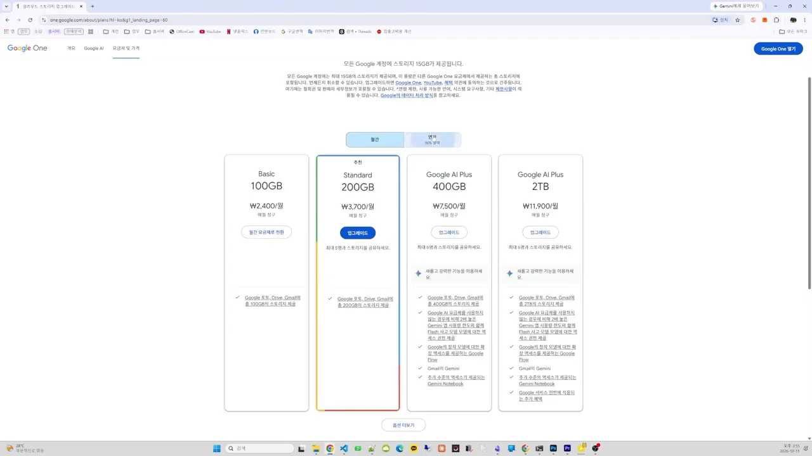
집에 24시간 켜 두는 작은 컴퓨터
홈서버는 거창한 장비가 아니에요. 평소 쓰는 PC와 다른 점은 모니터나 키보드를 꽂지 않는다는 것뿐이에요. 그 위에 쓸 프로그램을 깔아 두고, 폰이나 다른 PC에서 접속해서 써요. 그래서 구조로만 보면 구글 클라우드 같은 구독 서비스와 같아요. 서버가 남의 회사에 있느냐, 우리 집에 있느냐만 달라요.
발표자는 사진 한 장이 어디로 가는지로 이 차이를 보여 줘요. 첫 슬라이드에서는 '내 폰'에서 나간 선이 구글 포토의 '데이터센터'로 이어지고, 오른쪽에 빨간 '매달 결제' 칸이 붙어 있어요.
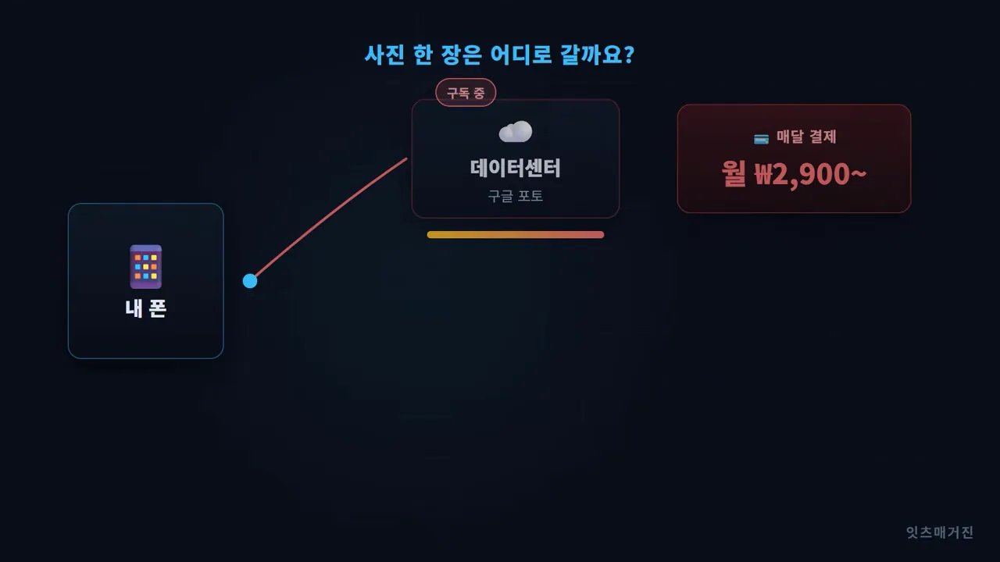
다음 슬라이드에서는 데이터센터와 결제 칸이 흐려지고, 내 폰에서 나간 초록 선이 아래쪽 '우리 집 홈서버 PC'로 꺾여요. 사진은 똑같이 자동으로 올라가지만 도착하는 곳이 집 안이라 따로 내는 돈이 없어요.
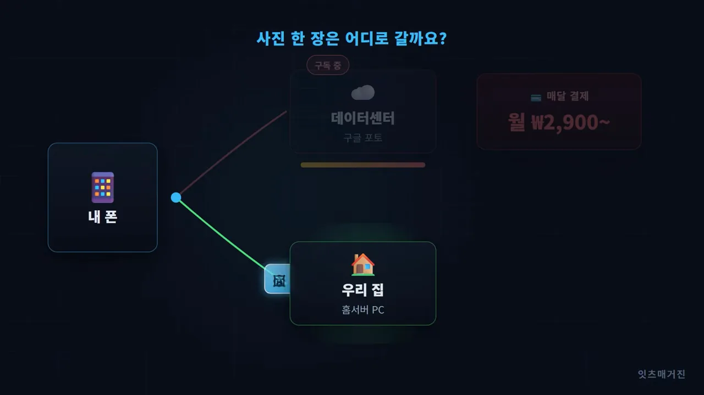
예전엔 어려웠는데 지금은 왜 쉬울까요
홈서버는 예전에도 있었어요. 다만 리눅스 터미널을 띄워 놓고 복잡한 명령어를 하나씩 쳐야 해서 개인이 만들기엔 벽이 높았어요. 발표자는 최근 몇 년 사이 두 가지가 바뀌었다고 해요. 하나는 성능이 괜찮으면서 전기를 적게 먹는 미니 PC가 흔해진 거예요. 화면 속 책상 밑에 놓인 손바닥만 한 상자 세 개가 그런 미니 PC예요.
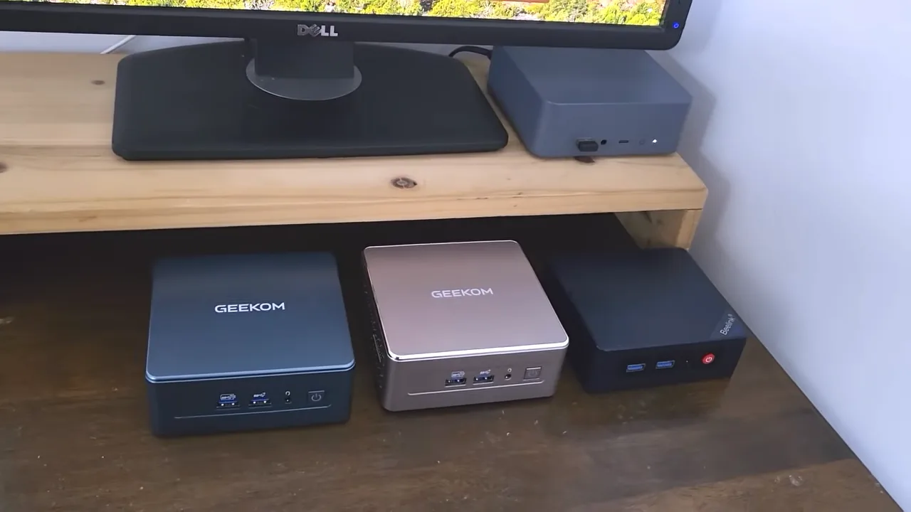
다른 하나는 설치가 쉬워진 거예요. UmbrelOS나 ZimaOS처럼 홈서버 전용 OS가 여럿 나왔어요. 아래는 발표자의 UmbrelOS 첫 화면이에요. 위쪽 카드에 저장 공간(40.6GB 사용)과 CPU(Central Processing Unit)·메모리 사용량이 보이고, 그 아래에 Home Assistant, Immich, Jellyfin, Syncthing 같은 앱이 아이콘으로 깔려 있어요. 이 영상에서 소개할 앱 대부분이 이미 여기 있어요.
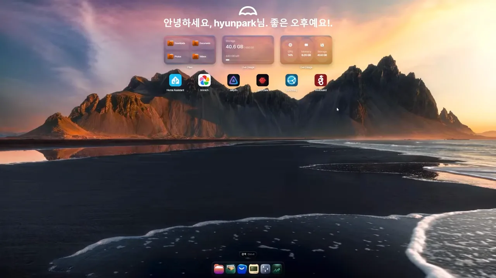
① 사진 백업과 ② 미디어 서버
홈서버를 깔았다면 무엇을 할 수 있을까요. 발표자는 많이 쓰는 용도를 다섯 칸으로 정리해요. 사진(찍는 대로 자동 백업), 미디어 서버(내 영상·음악 스트리밍), 파일 공유(어디서든 꺼내 쓰기), 동기화·백업(기기끼리 자동으로), 스마트홈(집안 기기 한 곳에서)이에요. 이 절은 앞의 두 칸을 다뤄요.
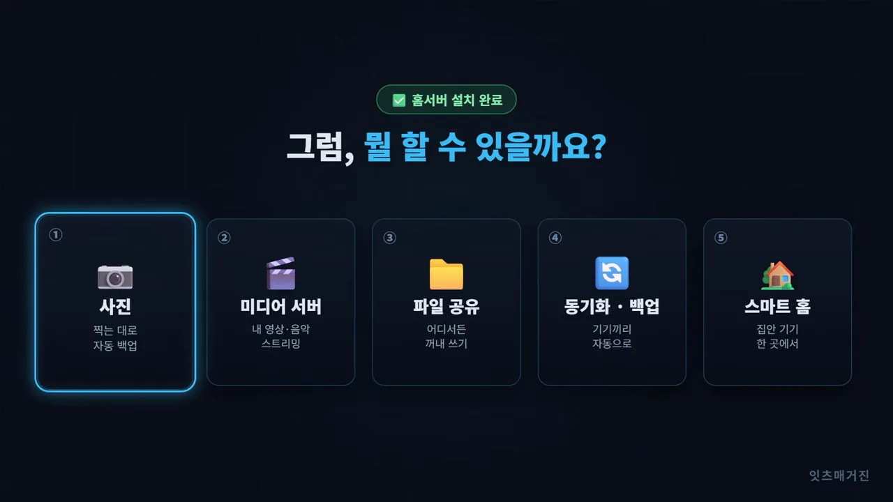
| 용도 | 영상이 든 앱 | 대신하는 서비스 |
|---|---|---|
| ① 사진 백업 | Immich | 구글 포토(구글 원) |
| ② 미디어 서버 | Jellyfin | 넷플릭스 같은 이어 보기 화면 (콘텐츠는 내 파일만) |
| ③ 파일 공유 | UmbrelOS 기본 파일 기능 | 외부 서버에 파일 올리기 |
| ④ 동기화·백업 | Syncthing · Duplicati | 구글 드라이브 |
| ⑤ 스마트홈 | Home Assistant | CCTV(Closed-Circuit Television)·출입 알림 |
① 사진 — Immich
폰으로 찍은 사진이 자동으로 집 서버에 올라가요. Immich는 날짜와 장소로 사진을 나누고, 얼굴도 알아서 알아봐서 정리해 줘요. 아래 웹 화면 맨 위 줄에 동그란 얼굴 사진이 나란히 있는데, Immich가 같은 사람끼리 묶은 결과예요. 그 아래로 장소별 묶음과 날짜순 사진이 이어져요.
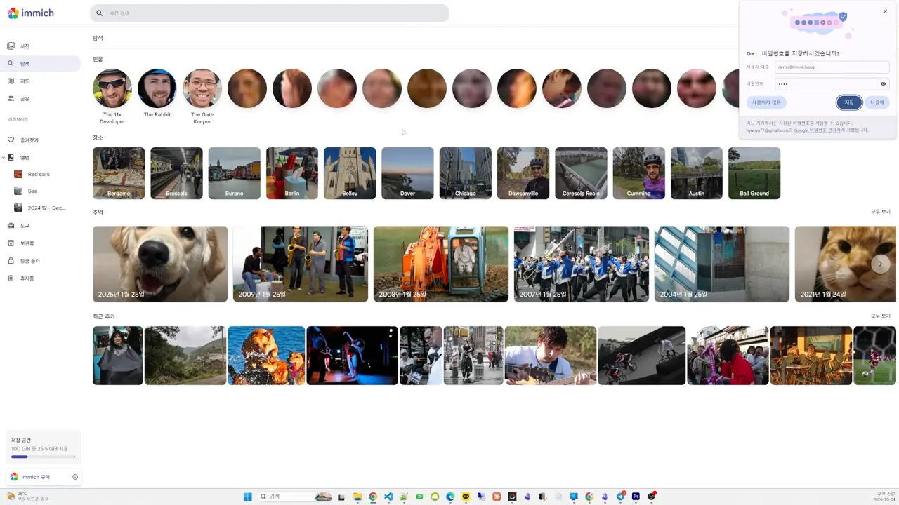
차이는 용량이에요. 구글 원 200GB는 월 3,700원인데, 홈서버는 내 PC 하드디스크가 허락하는 만큼 쓸 수 있어요. 폰 앱도 왼쪽 구글 포토와 오른쪽 Immich 앱을 나란히 놓으면 겉모습으로는 차이를 느끼기 어려워요. 발표자 말로는 저장되는 장소만 다를 뿐이에요.
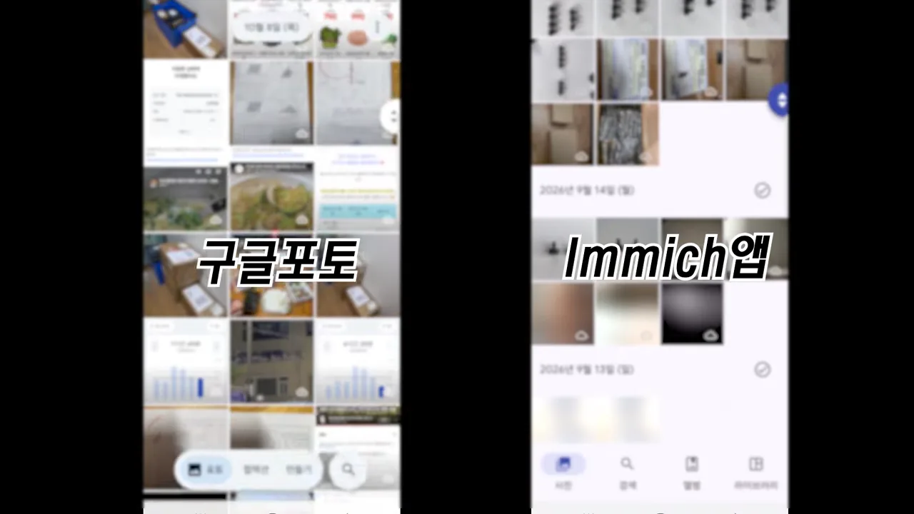
② 미디어 서버 — Jellyfin
발표자는 미디어 서버로 Jellyfin을 써요. PC에 흩어진 영상을 Jellyfin 서버에 올려 두면 아래처럼 Movies, Shows, Music, Playlists로 나뉜 화면이 생겨요. 가운데 줄은 보다 만 영상을 모은 '계속 시청하기'라서 넷플릭스처럼 이어 보기가 돼요. 밖에서 폰이나 태블릿으로 볼 수 있고, 가족이나 지인에게 공유할 수도 있어요.
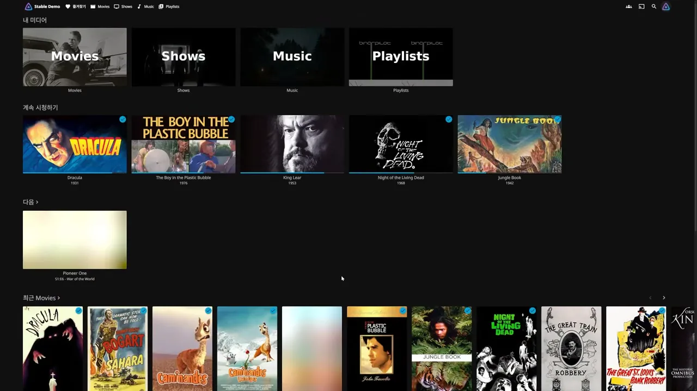
여기서 발표자가 오해를 하나 짚어요. Jellyfin을 깔면 넷플릭스처럼 보고 싶은 걸 마음껏 볼 수 있는 게 아니에요. 이미 가진 영상을 편하게 보는 도구이지, 유료 콘텐츠를 새로 볼 수 있게 해 주지는 않아요.
③ 파일 공유와 ④ 동기화·백업
③ 파일 공유
발표자는 회사에서 하던 일을 집에 와서 이어 하는 일이 많아요. UmbrelOS 같은 홈서버 전용 OS는 파일을 끌어다 놓기만 하면 서버에 올라가요. 노트북에서 저장한 파일이 집 서버에 들어가고, 폰이나 다른 PC에서 바로 열 수 있어요.
보안 이야기도 붙여요. 슬라이드 왼쪽 '외부 서버'에는 '누가 열어보는지 알 수 없다'는 경고가, 아래에 '찜찜하다'는 표시가 있어요. 오른쪽 '나만의 서버'에는 '집 밖으로 나가지 않는다'가 적혀 있어요. 회사 파일이나 개인 파일을 남의 서버에 올리기 꺼려질 때 내 서버에 두면 보안 면에서 조금 더 낫다는 거예요.
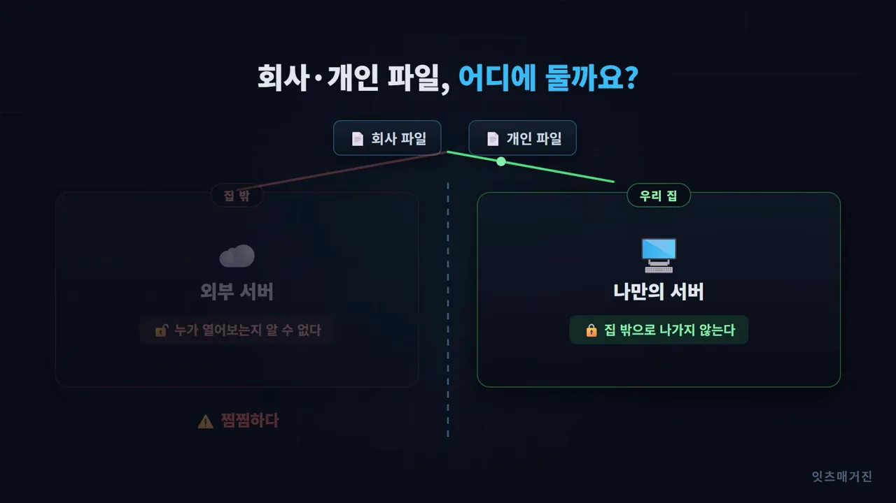
④ 동기화와 백업
파일 공유와 동기화는 달라요. 공유는 필요할 때 내가 직접 올리는 것이고, 동기화는 신경 쓰지 않아도 노트북이나 데스크톱의 파일이 서버와 자동으로 맞춰지는 거예요. 같은 일을 하는 유료 서비스가 구글 드라이브예요.
슬라이드 아래쪽 두 칸이 비교예요. 빨간 '구글 드라이브' 칸에는 용량 제한이 있고, 늘리면 요금도 올라가고, 큰 파일은 부담이라고 적혀 있어요. 초록 '내 홈서버' 칸에는 디스크 용량만큼, 추가 요금 없음, 큰 파일도 통째로가 적혀 있어요. 맨 아래에는 대표 앱으로 동기화에 Syncthing, 백업에 Duplicati를 꼽아요.
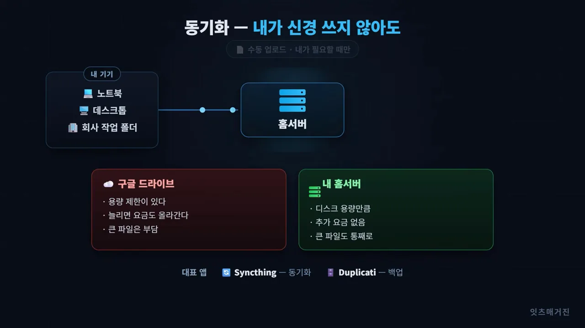
발표자는 회사에서 작업하던 폴더를 통째로 동기화해 둬요. 집이나 다른 곳에 가면 이미 맞춰진 파일로 바로 일을 이어 갈 수 있어요.
⑤ 스마트홈 — Home Assistant
마지막 용도는 스마트홈이에요. 외출했거나 사무실을 비웠을 때 안이 궁금하다면 Home Assistant라는 홈서버 앱이 좋다고 해요. 아래 대시보드에는 조명 스위치, 실내 온도 그래프, 에너지 사용 흐름, 집 평면도, 현관 초인종 기록이 한 화면에 모여 있어요.
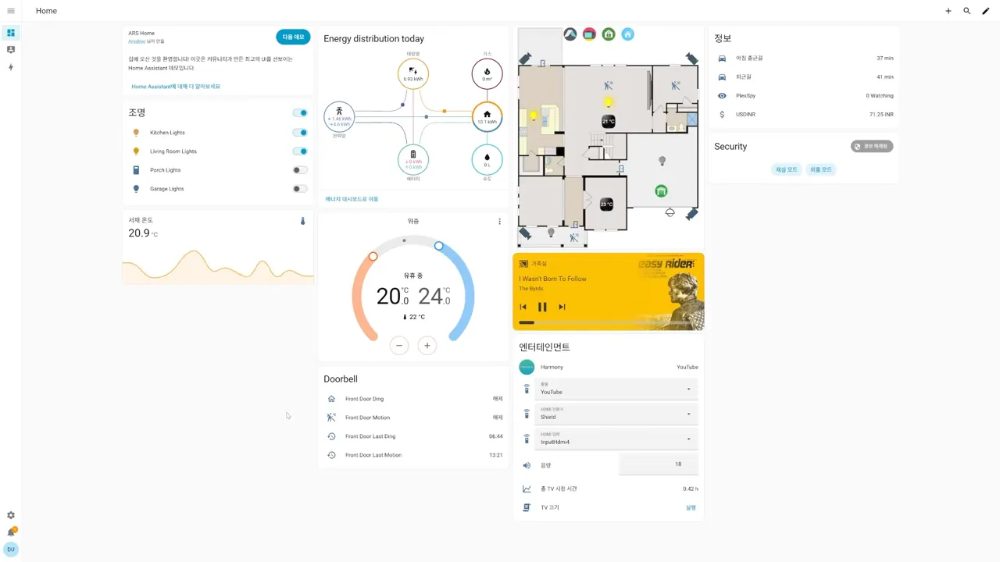
발표자의 실제 쓰임은 더 단순해요. 안 쓰는 스마트폰을 벽에 달아 CCTV로 쓰고 있어요. 아래 사진처럼 거치대에 물린 폰에 전원선이 꽂혀 있어요.
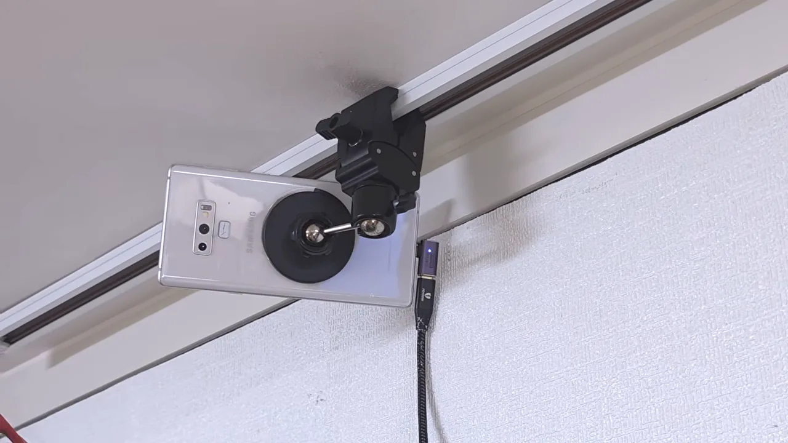
문이 열리거나 누가 사무실에 들어오면 이를 감지해서 알림을 보내게 할 수도 있어요. 화면 왼쪽은 알림이 메신저로 쌓인 모습이고, 오른쪽은 그 순간 찍힌 영상이에요. 여러 홈서버용 센서를 조합하면 할 수 있는 일이 훨씬 많아진다고 해요.
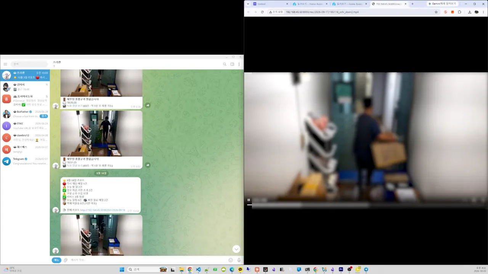
시작 전에 알아둘 세 가지 단점
여기까지 들으면 홈서버만 깔면 다 공짜로 될 것 같지만, 발표자는 세 가지를 솔직하게 짚어요.
전기요금
구독료는 사라져도 전기요금이 생겨요. PC마다 다르지만, 화면 자막처럼 저전력 미니 PC를 24시간 켜 두면 한 달에 2,000~3,000원 정도예요.
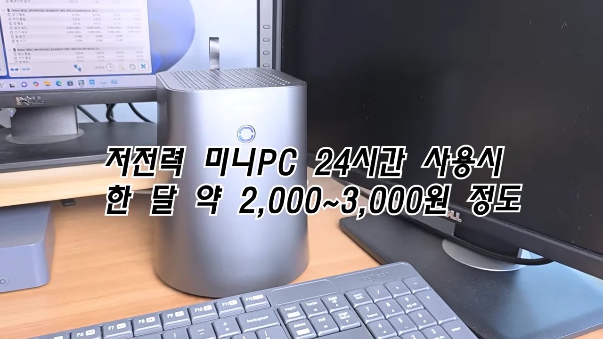
영상에 나온 숫자 두 개를 같은 눈금에 놓으면 이래요. 사진 백업 하나만 놓고 봐도 구독료와 전기요금이 비슷한 크기예요. 홈서버 한 대가 여러 구독을 함께 대신할 때 차이가 벌어져요.
PC 구입비
PC도 한 대 있어야 해요. 요즘은 메모리와 저장장치 값이 올라서 미니 PC가 '미니 PC가 아닌 가격'이 됐다고 해요. 그래도 미니 PC가 꼭 필요하진 않아요. 슬라이드 오른쪽 '중고 노트북이면 충분' 칸에 대안이 정리돼 있어요. 미니 PC처럼 저전력이고, 당근 같은 중고 거래로 보통 10만 원 안쪽이며, 메모리 8GB면 충분하고 고성능은 필요 없어요. 집에 안 쓰는 PC가 있다면 그걸 써도 돼요.
직접 고쳐야 해요
발표자가 가장 크다고 보는 단점이에요. 같은 슬라이드 아래쪽에서 초록 '구독 서비스' 칸은 문제가 생기면 그 회사가 고쳐 주고 보안도 신경 쓸 필요가 없다고 적혀 있어요. 반면 '홈서버' 칸에는 내가 직접 세팅하고 직접 고친다고 적혀 있어요.
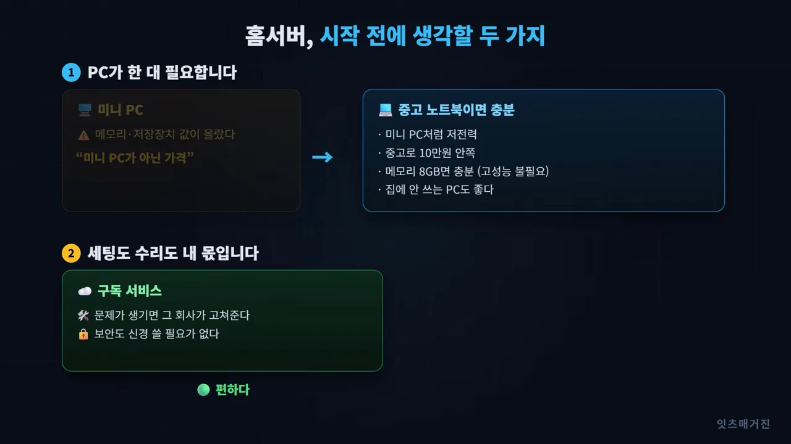
그래도 미리 겁먹을 필요는 없다고 해요. 요즘 홈서버 OS는 설정이 쉬워서 대부분 큰 문제 없이 설치할 수 있어요. AI를 저렴하게 쓸 수 있게 된 만큼, AI의 도움을 받아 세팅하는 방법도 있어요. 영상 끝부분 화면에서는 왼쪽 VS Code 창의 Claude Code가 UmbrelOS 설정을 손보고 있고, 가운데 UmbrelOS의 '에이전트 연결' 창이 Claude Code, Codex, Cursor 같은 AI 에이전트에 연결하는 방법을 보여 줘요.
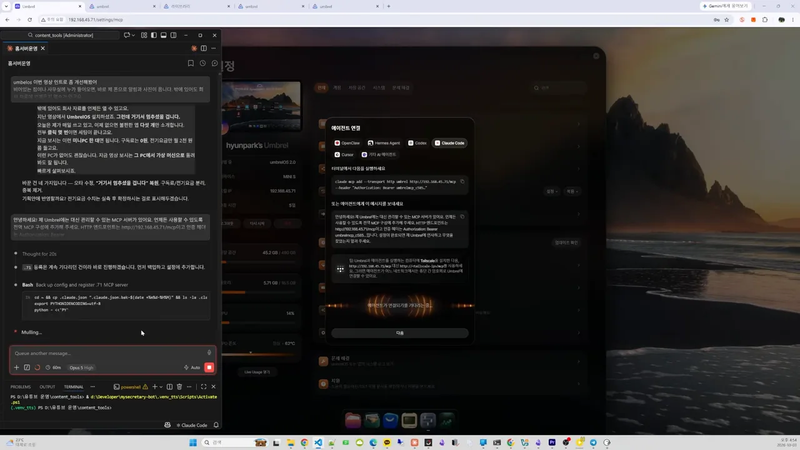
다음 영상에서는 홈서버를 어디에 설치하면 좋을지, 홈서버 전용 OS 몇 가지 비교, 처음에 꼭 깔아야 할 앱을 다룬다고 예고해요.